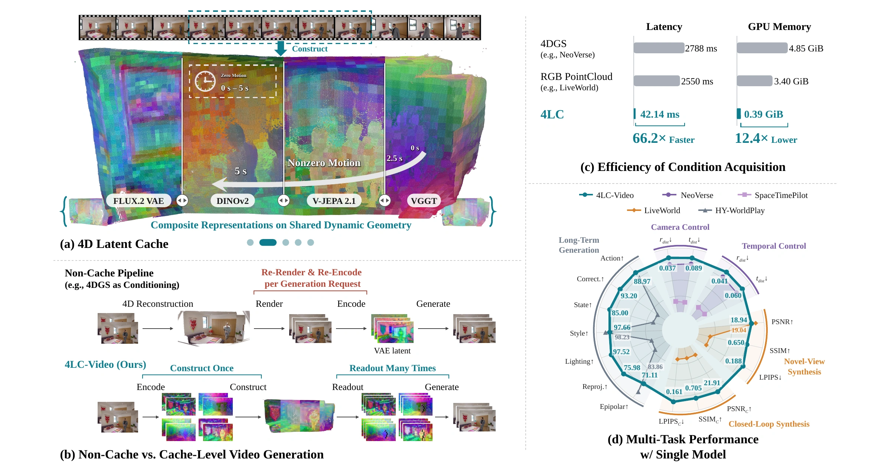
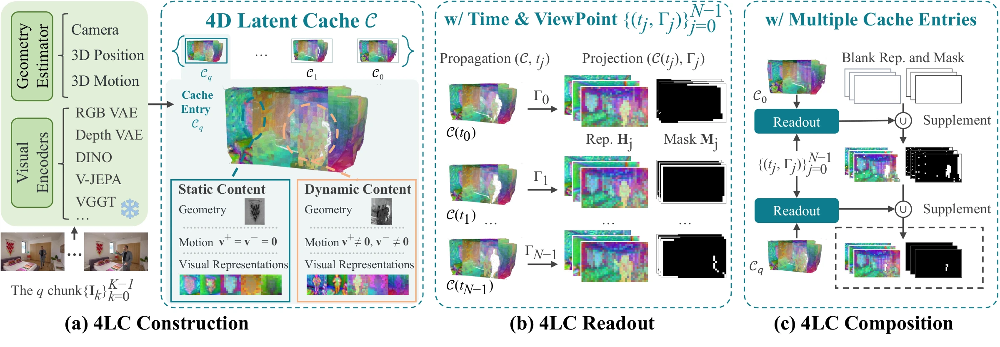
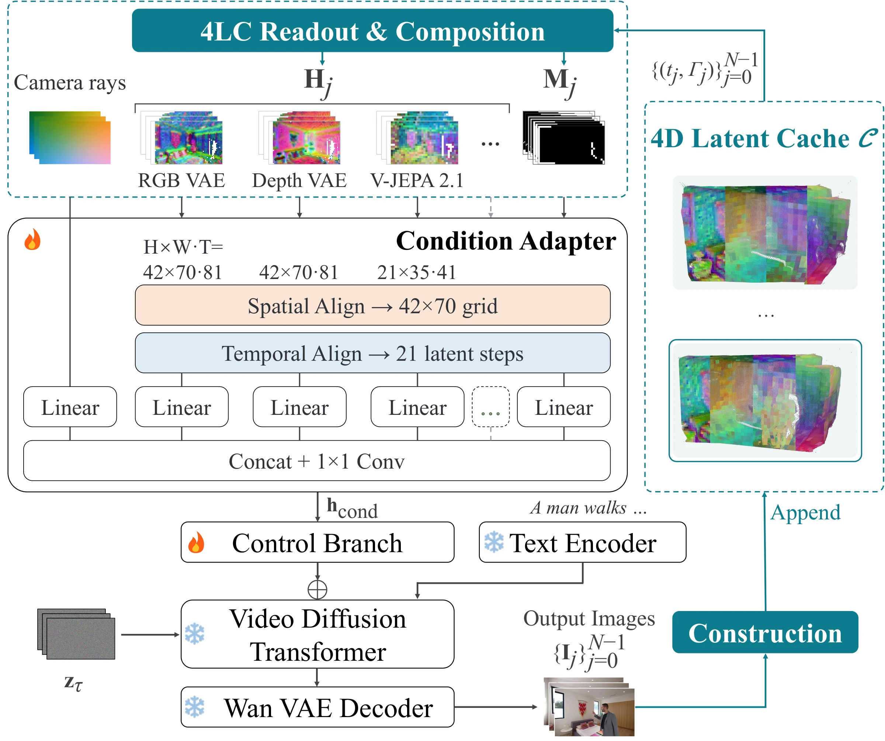

From Cache Readout to Video
Camera Control
Time Control
Single View to Multiple Views
Image to Video
Image to World
Video Editing
Condition Acquisition
One segment: share of end-to-end generation time spent on condition acquisition
Condition acquisitionRest of generation
up to68.5×faster condition acquisition
12.6×lower peak GPU memory
All timings: 81-frame segments at 560×336 on the same Wan2.1 backbone.
Comparison with NeoVerse
Abstract
For video generation in dynamic world modeling, observed static and dynamic content should be efficiently reused to provide conditions for repeated generation at different times and viewpoints. We introduce 4LC, a 4D latent cache with composite visual representations and a flexible spatiotemporal access interface. As a latent cache, 4LC directly reuses visual representations of static and dynamic content to provide generation conditions, avoiding per-request RGB rendering and re-encoding. Building on 4LC, a single 4LC-Video model handles camera control, temporal control, novel-view synthesis, scene revisits and long-term generation without task-specific fine-tuning.

4D Latent Cache

4LC-Video
Task configurations for 4LC-Video. Requests use one entry or selected entries from . preserves the source or default single-image timeline, and the source camera trajectory. Scene revisits use one readout along a camera path that returns to its start.
| Task | Initial frames | Target request | Condition source |
|---|---|---|---|
| Camera control | |||
| Temporal control | |||
| Novel-view synthesis | |||
| Scene revisits | |||
| Long-term generation |

BibTeX
@article{zhang2026fourlc,
title = {4LC: 4D Latent Cache for Efficient Conditioning in Dynamic World Modeling},
author = {Zhang, Jianhui and Lin, Zuyao and Xu, Pengxin and Wang, Jingdong and Chen, Xingyu},
journal = {arXiv preprint arXiv:XXXX.XXXXX},
year = {2026}
}